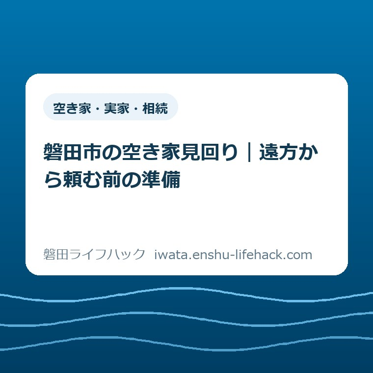
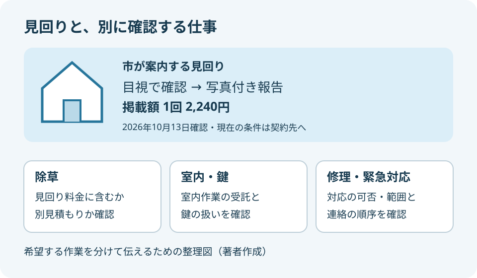
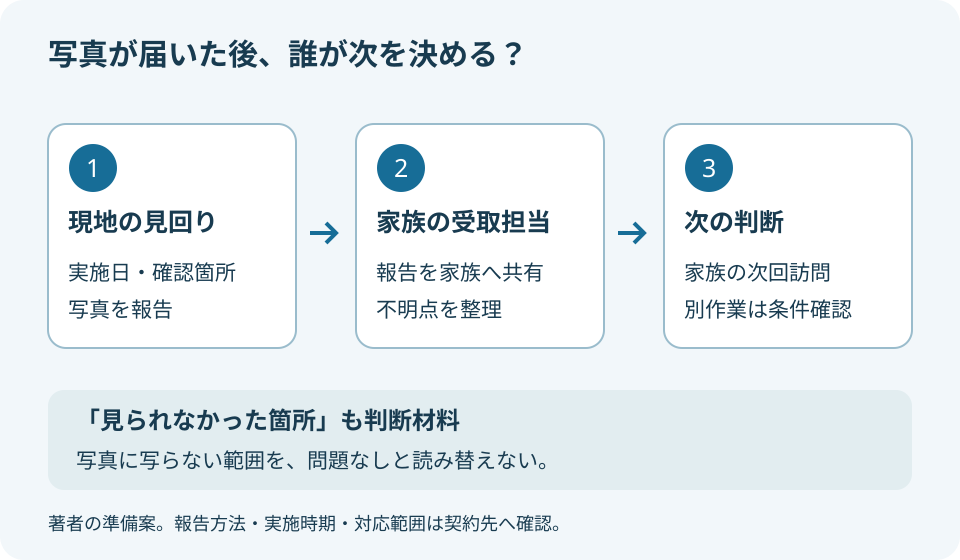

空き家・実家・相続
磐田市の空き家見回り｜遠方から頼む前の準備

この記事の要点
Q. 実家の見回りのために帰省を続けられません。頼む前に何を準備すればいい？
A. 磐田市は、シルバー人材センターによる目視の見回りと写真付き報告を案内しています。掲載額は1回2,240円ですが、利用条件や作業範囲は個別確認が必要です。除草・室内作業・緊急対応を含むと考えず、見積もりと報告方法を確認します。今日は家族が次に実家を訪ねられる日を一つ確かめてください。
帰省のたびに家を見る。その負担から話を始める
磐田市に残る実家の見回りは、家を見る時間だけでは終わりません。往復の移動、仕事の調整、鍵の受け渡しが必要です。自宅の家事や子育てを済ませてから向かう人もいるでしょう。帰省を続けてきた家族が「次は難しい」と言うとき、まず受け止めたいのは、そこまで払ってきた手間です。
空き家管理の利用条件や費用は、家の状態と契約内容で変わります。この記事は、磐田市の公式案内をもとに、遠方から見回りを頼む前の準備を整理したものです。依頼すればすべての管理が済むという案内ではありません。確認日は2026年10月13日です。
大石浩之（磐田市／不動産業）として、私は帰省の回数だけで家への思いを測るべきではないと考えます。行けない日を隠さず、代わりに何を頼めるかを考える。そのためのメモが一枚あれば、家族同士の話も依頼先との話も具体的になります。
最初から売却、片付け、修理まで決めようとすると、話し合いの入口が広がりすぎます。今回決めるのは「家族が次に行くまで、何を見てもらいたいか」です。家の将来を決める相談とは分けて、目の届かない期間をどうつなぐかに絞ります。
10月の準備は、台風の予報と平年の傾向を分ける
気象庁「台風の発生、接近、上陸、経路」は、1991～2020年の平均を説明しています。発生・接近・上陸が集中する時期として7～10月を挙げています。10月も家の確認方法を考える時期に含まれますが、この資料は2026年の磐田市への接近予報ではありません。
私は、季節の区切りを家族の予定を見直すきっかけにするのがよいと考えます。「台風が来るから必ずこの日に行く」と先に約束するより、平常時の見回りと、荒天で実施できない場合の扱いを分けて尋ねるほうが、依頼内容を整理できます。
屋根や高所の状態が気になっても、見回りの人に登って確認してもらえると決めつけません。危険がある場所には入らないことを前提に、どこから見られるかを依頼先と相談します。荒天時の訪問や直後の駆け付けも、通常の予約に含まれるとは考えないでください。
公式案内の1回2,240円は、何の料金か
磐田市「空き家に関する相談会等」の支援案内では、シルバー人材センターが所有者等と契約し、目視で状態を確認するとしています。写真付き報告書を送付する見回りの掲載額は、1回2,240円です。記事作成時にページ番号1012477の本文を確認しました。
同じ案内には敷地内の除草作業も登場します。ただし、見回りの2,240円に除草を含むとの記載はありません。掲載額を家全体の管理一式の金額として読まないことが、依頼前の最初の注意点です。現在の料金、追加費用、支払方法は契約先に確認が必要です。
意外に感じるかもしれませんが、「見回りの値段が書いてある」ことと「希望する作業の総額が分かる」ことは別です。外から状態を知りたいのか、草を取り除きたいのか、室内を確認したいのかで、求める仕事が違うからです。
私は金額を比べる前に、希望する仕事を短い動詞で書くことを勧めます。「見る」「撮る」「知らせる」「草を取る」「窓を開ける」と分けてみる。同じ一回の訪問でも、引き受けられる範囲を質問しやすくなります。以下の項目は私の整理案で、市の指定様式ではありません。

依頼メモには、家の場所と見てほしい箇所を書く
見回り依頼の準備では、対象の家を特定できる情報と、家族が気にしている箇所を分けて書きます。住所だけで建物や入口が分かるか、道路から見える目印は何かを確かめるためのメモです。番地が似た建物や同じ敷地の物置も、伝え漏れを減らしたい部分です。
私なら、家族に共有する紙の上半分に「所在地」「所有者との関係」「連絡を受ける人」を置きます。問い合わせる人と契約する人が違う場合は、そのことを最初に伝えます。家族というだけで必要な手続きが省けるとは考えず、契約に必要な確認や書類を尋ねます。
下半分には、見てほしい場所を三つ程度に絞って書くと扱いやすくなります。例えば、玄関付近、庭の道路側、物置の周囲です。これは希望の書き方の例で、すべて確認できるという意味ではありません。現場で近づけない箇所があれば、その理由も知らせてもらえるか確認します。
過去の写真が手元にある場合は、撮影日が分かるものを候補にします。「前からこの状態だった」と比較する材料にするためです。撮影日が不明なら不明と書き、古い写真を現在の状態として送らないようにします。写真がないために準備が止まるなら、文章で気になる箇所を伝える方法を相談できます。
実家の名義や家族の意見が整理できていない場合は、見回りの問い合わせで何を伝える必要があるかを聞きます。相続や登記の個別判断は司法書士などの専門家に確認してください。話し合いの準備そのものは、空き家相談会に向けた家族の相談メモでも整理しています。
鍵・立入り・追加作業は、依頼の前に線を引く
空き家の見回りを遠方から頼む際は、どこまで入る必要があるかを先に確認します。道路側から見るのか、門の内側へ入るのか、室内まで希望するのか。鍵を渡すかどうかは、その作業範囲が決まってから相談する項目です。
鍵の預かりに対応しているかは、この記事では確認できていません。必要な場合は、受渡方法、保管方法、返却方法を依頼先に尋ねます。家族間でも合鍵の所在を確認し、誰が何本持つのかを記録します。鍵の隠し場所や暗証番号を、関係のない人が見られる共有メモへ書くのは避けます。
電気や水道の使用を伴う室内作業を希望する場合も、外観の目視とは別に確認します。契約状態や使用できる設備を、分かる範囲で伝えるためです。通水や換気の方法まで家族が一方的に指示するのではなく、その作業を受けられるか、現場条件は何かを尋ねます。
追加作業の扱いは、金額だけでなく連絡の順序まで決めたいところです。「異常を見つけたらまず写真と連絡をお願いします。修理は見積もりを確認してから判断します」と希望を伝えます。緊急時を含め実際にどこまで対応できるかは契約内容で確かめ、修理の手配まで当然に任せないようにします。
写真付き報告は、家族が次を決められる形で受け取る
写真付きの見回り報告を依頼する前に、撮影箇所、報告書の受取方法、届く時期を確認します。市の案内は写真付き報告書の送付までを示していますが、写真の枚数や送付の手段、所要日数は掲載文から確定できません。希望する方法が使えるか、契約先へ尋ねる項目です。
私が欲しいと考えるのは、異常の有無だけを並べた報告ではありません。「どの場所を、いつ、どこから見たか」が分かる報告です。敷地の奥まで見られなかったなら、未確認の部分を残してほしい。見えなかった範囲が分かれば、次に家族が行くときの確認箇所を決められます。
例えば、庭の写真が一枚届いた場面を想定します。草の状態は分かっても、家の反対側や物置の内側までは分かりません。写真に写っていない範囲を「問題なし」と読まないことが家族側の役割です。目視の見回りだけで建物全体の安全性が確定するわけではありません。
連絡先は、最初に受け取る人を一人決め、その人が応答できない場合の連絡順も相談します。家族全員が別々に依頼先へ連絡すると、希望する作業が食い違うおそれがあります。報告を共有する役と、費用を承認する役が違うなら、家族内の相談手順もメモに残します。

報告書は、受け取った日だけでなく見回りの実施日で整理することを勧めます。後日見つかった変化と比べるとき、いつの状態かを読み違えにくくなるためです。被害が疑われる場合の書類の考え方は、空き家の被災証明書についての記事も参照できます。見回り報告そのものと証明書の申請は別の話です。
良い点——帰省と帰省の間にも、状態を知る入口がある
磐田市の見回り案内の良い点は、遠方の所有者等が相談できる依頼先と、報告の形を示していることだと私は考えます。誰に頼めるか分からず帰省を重ねる家族にとって、最初の問い合わせ先が見えることには意味があります。
もう一つ、写真付きという点を私は評価します。電話で聞いた内容を家族が伝え直すだけでは、見た目の受け取り方がずれることがあります。同じ写真を見ながら話せれば、「次はここを確認したい」と場所を指して相談できます。帰省の代わりになる範囲を具体的に考える材料です。
ただし、家族が受け取れる時間や連絡手段に合わなければ、報告があっても判断が止まります。仕事中に電話に出られない人なら、連絡可能な時間帯を伝える。紙で受け取るほうが扱いやすい家族なら、その方法に対応するかを尋ねる。私は、暮らしに合う受取方法まで含めて使いやすさを考えたいです。
注文したい点——「含まれない仕事」が先に分かると助かる
見回りサービスの案内に私が注文したい点は、料金の横で作業の境界を確認しやすくすることです。掲載文だけでは、除草、室内作業、鍵、荒天後の対応、報告までの日数を確定できません。案内に書かれていない部分を、利用できないと断定することも避けたいところです。
家族が求める仕事と、依頼先が受けられる仕事は、最初から一致するとは限りません。私は、問い合わせの時点で「できること」「別料金のこと」「できないこと」を並べられると助かると考えます。担当する人への注文ではなく、遠方から行き来せずに確認するための案内への要望です。
利用する側も「空き家を全部お願いします」の一言で済ませないほうがよいでしょう。例えば「外観の見回りを希望。庭の除草は別に見積もりが欲しい」と伝える。依頼の内容が二つに分かれていれば、まず見回りだけを検討する選択も残せます。
大石の視点——売る決断と、見回りの手配は別でよい
私は、空き家を売るかどうか決めていない家族にも、現状を知るための準備はできると考えます。見回りを頼むことを、売却への同意に結び付ける必要はありません。家の将来を決める時間と、次に状態を確かめる段取りは、別々に持ってよいのです。
私なら、帰省の日程表を前に「全員の予定が合う日を待つか、先に見回りを相談するか」で迷うと思います。家族で直接見たい気持ちも分かります。それでも予定欄が埋まらないなら、まず未定と書く。誰かが無理を引き受けることを前提にせず、分からない期間を見える形にするほうを選びます。これは実際の相談事例ではなく、私の判断です。
見回りの依頼は、家を手放す決断ではない。私はそこをはっきり分けたいです。報告で判断材料が一つ増えたことを、その日の成果にしてよい。次回の帰省で家族が確認する、別の作業を相談する、将来の活用を話し合う。その順序は各家庭で違って構いません。
磐田市の「空き家バンク」は、不動産関係事業者からの物件情報を掲載する仕組みです。見回りの契約とは目的が違います。活用や売買の情報を知りたくなった段階では、空き家バンクと空き家おこしプロジェクトの違いを別の検討材料にできます。
対案・結論——今日は、次に訪ねられる日を一つ確認する
空き家見回りを頼む前に今日行うことは、家族が次に実家を訪ねられる日を一つ確認することです。「そのうち帰る」を具体的な日付にできるか、家族の予定を確かめます。まだ決められなければ、未定という回答を共有するだけでも、依頼を考える出発点になります。
次回の訪問予定が分かれば、その日までに何を知りたいかを整理できます。庭の様子なのか、外から見える建物の状態なのかをメモに残します。日程の例を他の家族の義務にせず、行ける人の都合を確かめてから、依頼先へ希望時期を伝えてください。
問い合わせの際は、次の短い文を自分の家に合わせて使えます。空欄を全部埋めることが申し込みの条件ではありません。必要書類や契約手順は依頼先から案内を受け、分からない点を推測で埋めないことを勧めます。
磐田市の実家の見回りを検討しています。家族の次回訪問は○月○日を予定しています（または未定です）。見てほしい場所は○○です。作業範囲、現在の料金、写真報告の方法と時期、実施できない場合の扱いを教えてください。
制度やサービスの内容、掲載額は変わる場合があります。相続・登記などの個別判断は専門家へ、具体的な受託条件は契約先へ確認してください。最後は磐田市公式「空き家に関する相談会等」で、見回りの最新案内を確認してください。
よくある質問
磐田市の空き家見回りを検討する家族に向け、掲載内容と依頼前の確認事項を整理します。
見回り1回2,240円に、草刈りや室内の換気も含まれますか？
磐田市の掲載額は見回り1回2,240円です。除草も案内されていますが、この額に含むとは書かれていません。室内の換気や通水、鍵の預かりも含まれると考えず、希望作業を別々に伝えてください。現在の料金、追加費用、対応範囲は契約先へ、最新の掲載内容は市公式ページで確認します。
台風の後、すぐに見に行ってもらえますか？
市の掲載文だけでは、台風直後の駆け付けや実施までの日数は確認できません。通常の見回りとは分けて、希望時期、荒天で実施できない場合の扱い、再日程の連絡方法を相談してください。危険な場所への立入りや高所の確認を前提にせず、現場の条件を踏まえて受託できる範囲を確かめます。
売却するか未定でも、見回りの準備を進めてよいですか？
売却の判断と、現状を知るための見回り準備は分けて考えられます。まず家族が次に訪ねられる日を一つ確認し、それまでに見てほしい箇所を書き出します。契約できる人や必要書類は家ごとの事情で異なるため、所有者との関係や名義が未整理であることも伝え、依頼先に条件を確認してください。
参考にした公式情報
- 空き家に関する相談会等／磐田市（2026年10月13日確認）
- 空き家バンク／磐田市（2026年10月13日確認）
- 台風の発生、接近、上陸、経路／気象庁（2026年10月13日確認）
最終確認日：2026-10-13 ／ 本記事は公表情報と執筆者の見解を分けて記載しています。制度・数値・公開状況は変更される場合があるため、最新情報は磐田市公式ページでご確認ください。
 大石浩之／磐田市／不動産業・宅地建物取引士
大石浩之／磐田市／不動産業・宅地建物取引士